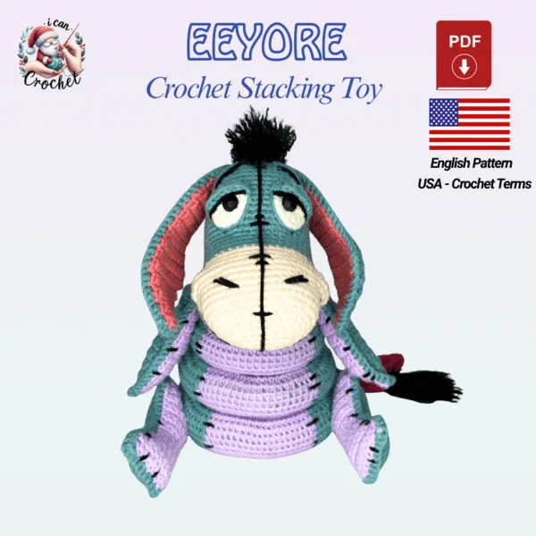
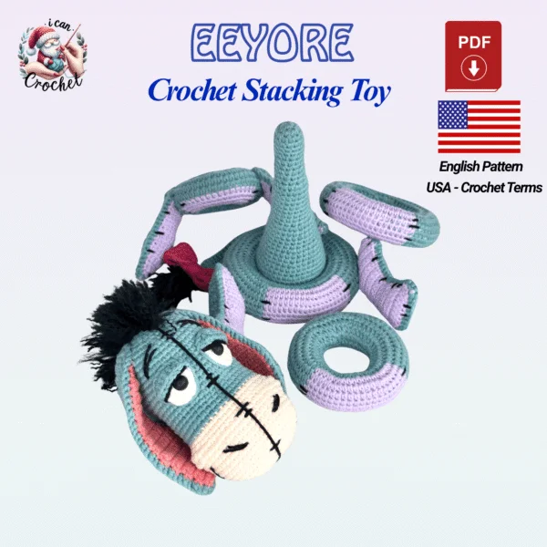
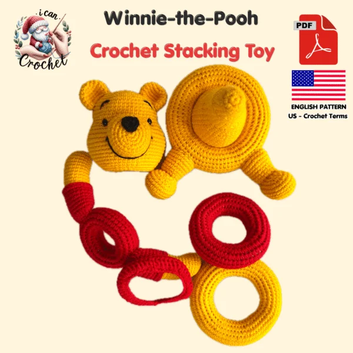
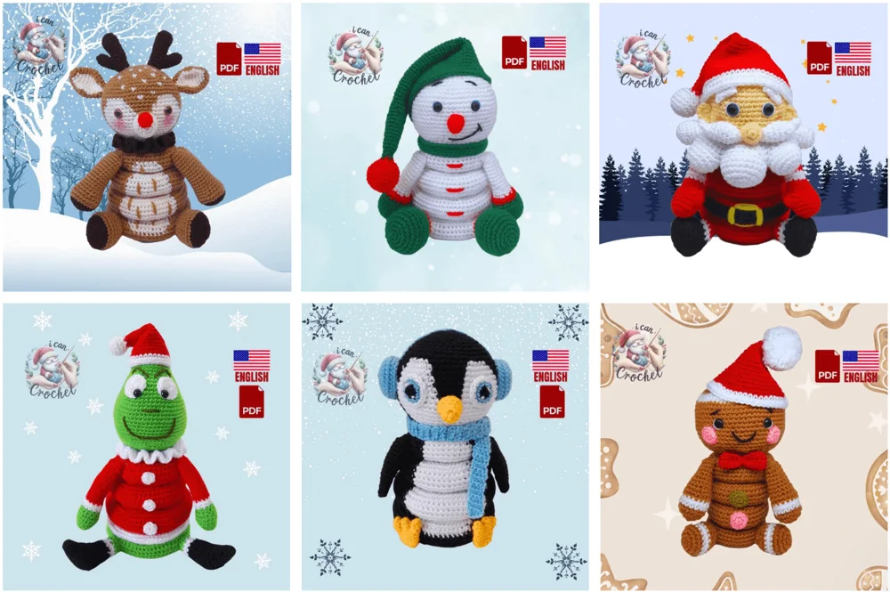
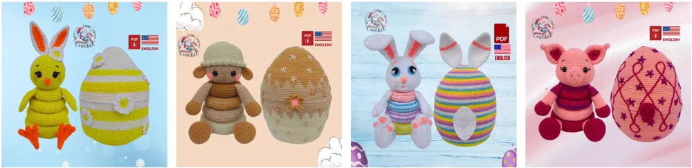
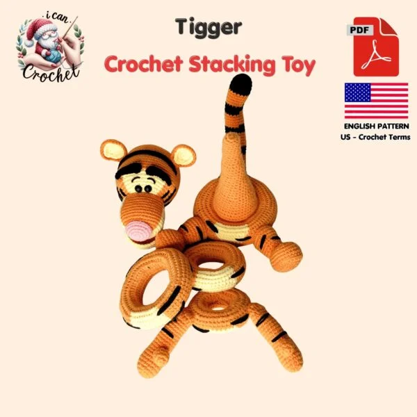

AMIGURUMIS DE EMPILHAR
Já imaginou fazer essa fofura
e surpreender com cada peça?


Transforme seus novelos em bichinhos que se montam e se desmontam. Uma coleção de receitas em PDF para criar, colecionar e presentear com o carinho das suas mãos.
Quero fazer meus amigurumis- 29 projetos na coleção
- Instruções com fotos
- Material digital em PDF
Você faz as peças. Fios e brinquedos prontos não estão incluídos.
O CARINHO ESTÁ NOS DETALHES
Primeiro vem o “que lindo!”.
Depois, a surpresa.
O que parece um bichinho de crochê revela uma coleção de argolas. Cada parte se encaixa para dar forma ao personagem, e o resultado fica especial até desmontado.
Imagine entregar um presente assim e poder dizer: “Fui eu que fiz para você.”
Conhecer a coleção
ESCOLHA SUA PRÓXIMA FOFURA
Uma coleção.
Muitos motivos para criar.
Projetos para entrar no clima do Natal, preparar um presente de Páscoa ou escolher aquele personagem que dá vontade de fazer agora.

Escolha seu favorito e vá ampliando sua coleção, um projeto por vez.

Fofuras para decorar e fazer parte dos presentes de Natal.

Uma ideia de presente artesanal para uma Páscoa cheia de carinho.
VEJA O MATERIAL POR DENTRO
Do novelo
à última argolinha.
As prévias originais mostram a peça, os materiais e a construção com instruções e imagens. Abra uma página para conferir de perto.
Estas são páginas reais da referência em inglês. O ZIP não contém os 29 PDFs completos nem uma tradução em português.
UM PROJETO DE CADA VEZ
O prazer de ver
sua criação ganhar forma.
- 01
Escolha o seu favorito
Comece pelo personagem que você mais quer ter pronto nas suas mãos.
- 02
Separe fios e agulha
Confira os materiais e acompanhe as etapas no seu ritmo.
- 03
Monte a surpresa
Junte as partes e aproveite o orgulho de ver tudo prontinho.

COLEÇÃO ENCANTOS DE EMPILHAR
Seu próximo presente
pode sair das suas mãos.
- 29 receitas digitais de amigurumis de empilhar
- 6 projetos de Natal + 19 personagens + 4 de Páscoa
- Instruções escritas e fotos de apoio
- PDFs para consultar no celular ou imprimir
Pagamento único · preço proposto para teste
R$47,00
Prévia: checkout ainda não conectado.
Oferta digital. Não inclui peças prontas, fios ou agulhas. O material original está em inglês; a entrega final ainda precisa ser definida.
ANTES DO PRIMEIRO PONTO
Alguma dúvida?
Vou receber os bichinhos prontos?
Não. A proposta é uma coleção de receitas digitais para você confeccionar as peças com seus próprios materiais.
Preciso saber crochê?
É importante conhecer os pontos básicos e conseguir acompanhar uma receita escrita. As fotos ajudam a visualizar a construção; isso não substitui um curso de crochê do zero.
O material já está em português?
Não. O material de referência recebido está em inglês, com termos de crochê americanos. A versão em português e os arquivos finais precisam ser preparados e revisados antes da abertura das vendas.
São videoaulas?
Esta proposta é de receitas escritas em PDF com fotos. Não estamos oferecendo um curso em vídeo.
Posso imprimir?
Sim. O formato PDF pode ser consultado no celular, tablet ou computador e também impresso.
Qual é o tamanho das peças?
A referência indica aproximadamente 20 a 36 cm de altura, dependendo do projeto. Fio, agulha e tensão dos pontos também alteram o tamanho final.